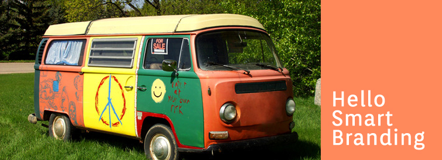

Articles

Goodbye VW Kombi Van, Hello Smart Branding
This year marks the end of an era for the VW camper van. A moment of silence please. After all, that van appears in my top 10 favorite childhood memories.
It was the early 80's. A hand painted sunset sprawled across the entire side of it, with rust bubbling just beneath the surface along the lower rim. With a flushed look of freedom, my brother leaped out of the van to embrace his family after driving across the country. The scene is painted in technicolor in my memory as though it were just yesterday.
What does the van symbolize for me? Freedom, possibility and creativity. I always looked up to my brother for these very reasons. His arrival marked a sacred time for me, and his cross country trips in that van lit a fire inside of me that craved adventure. That van was something.
How can a car stimulate such emotion? How does something hold such value through decades, and pass from generation to generation? It's simple. Branding.
Originally marketed as a family vehicle in the 1950's when it first appeared, it was valued for convenience and freedom to explore the outdoors. However, in the era of the beatniks, the van took on an entirely new meaning which has expanded to include free spirits of all kinds- surfers, vagabonds and music group followers.
How did they reel in those hippies anyway? In fact, Volkswagen was way ahead of their competitors. Their marketing campaign “Think Small” that introduced the Beatle in the 1960's spoke to the counter culture uprising that was beginning in the United States by starting new ad trends that were vastly different from the norm, and offering an alternative to the larger American cars like the cadillac. They created for themselves an identity as a brand that was individual.
In their article about the “Think Small” Beatle campaign, branding strategists Derrick Daye and Brad VanAuken say:
...use of white space in the “Think Small” ad was almost an act of defiance, in advertising terms. Why would an advertiser pay for that space and then leave it empty? Krone was sending a signal to his audience: “We don’t care about ad conventions, and neither do you, so let’s dispense with unnecessary imagery.” Similar nod-and-wink messages could be picked up from the way the car was depicted in the ads (shrunken down and off-center; in one ad, Krone even showed the car dented!). Along with the understated style of the copy, it all said to the ad’s audience, 'There’s something going on here, not just in this ad, but in the culture. Do you get it? Are you part of it?'...VW had created a kind of club to which these people could belong. And those who became part of that club weren’t just customers—they were advocates who took up the cause. They came to embrace VW’s ideals, identified with the brand, and, in many cases, remained loyal to it for years and even decades to come.
As we say goodbye to the VW camper, let's remember how important it is to stay on top of who we're marketing to. How can we stay current with trends and identify with our audience more effectively? How can we connect with consumers, and make them loyal to a brand? It's not things that evoke meaning, but how they shape our lives and create possibility. Knowing how people use something, and how it effects them in some way can stimulate better marketing campaigns and aid in the evolution of a product over time.
© 2017 Chris Gillis Design All Rights Reserved.